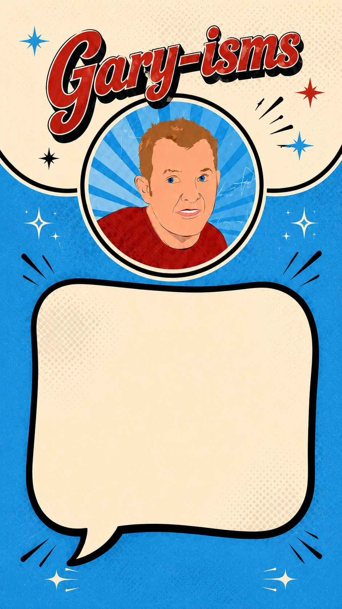

— tap for another —
Install
Not Gaz
All
Just Gaz
iPhone / iPad
- Open this page in Safari
- Tap the Share button at the bottom of the screen
- Scroll down and tap "Add to Home Screen"
- Tap Add
Android
- Open this page in Chrome
- Tap the menu (three dots, top right)
- Tap "Add to Home Screen"
- Tap Add
v2.9